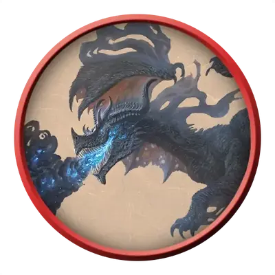

Юный теневой дракон
Juvenile Shadow Dragon
Средний Дракон, Хаотичный Злой

Класс Защиты 15 Инициатива +4 (14)
Хиты 45 (6к8 + 18)
Скорость 30 футов, Полёта 60 футов, Лазания 30 футов
| мод | спас | ||
|---|---|---|---|
| СИЛ | 17 | +3 | +3 |
| ЛОВ | 14 | +2 | +4 |
| ТЕЛ | 17 | +3 | +3 |
| мод | спас | ||
|---|---|---|---|
| ИНТ | 12 | +1 | +1 |
| МДР | 11 | +0 | +0 |
| ХАР | 15 | +2 | +2 |
Сопротивление урону см. Живая тень
Иммунитеты Некротический
Чувства Тёмное зрение 60 футов, пассивное Восприятие 14, Слепое зрение 10 футов
Языки Общий, Драконий
Опасность 4 (1 100 опыта; БВ +2)
Особенности
Живая тень. Находясь в области Тусклого света или Темноты, дракон обладает Сопротивлением ко всему урону, кроме Силового, Психического и урона Излучением.
Чувствительность к солнечному свету. Находясь на солнечном свету, дракон совершает с Помехой все проверки характеристик и броски атаки.
Действия
Мультиатака. Дракон совершает две атаки Раздиранием.
Раздирание. Бросок рукопашной атаки: +5, досягаемость 10 фт. Попадание: 7 (1к8 + 3) Рубящего урона плюс 3 (1к6) Некротического урона.
Теневое дыхание (Перезарядка 5–6). Спасбросок Ловкости: Сл 13, каждое существо в 30-футовом Конусе. Провал: 17 (5к6) Некротического урона. Успех: Только половина урона. Провал или успех: Если этот урон опускает Хиты Гуманоида до 0, он умирает, а из его трупа восстаёт Тень. Тень подчиняется дракону, имеет то же значение Инициативы, что и дракон, и ходит сразу после него.
Бонусные действия
Скрытность в тени. Дракон совершает действие Затаивание, если находится в области Тусклого света или Темноты.
Бонус мастерства +2
Среда обитания Подземье, Царство теней
Сокровища Любые
Теневые драконы
Осквернённые тьмой драконы
Теневые драконы обитают в забытых, лишённых света местах. Возможно, когда-то они принадлежали к иным видам драконов, но влияние планарных сил, негативной энергии или зловещей магии лишило их прежней окраски и блеска. Вместо своего прежнего дыхания теневые драконы извергают клубы густого мрака, что одним касанием иссушает любую жизнь. Те, кто погибает от дыхания теневого дракона, восстают в виде теней, послушных воле своего убийцы.
Обычно теневые драконы селятся в Подземье, особенно в местах, связанных с Царством теней или иными мрачными планами. Иногда — укрываются в тёмных, искажённых уголках тех краёв, которые облюбовали до превращения. Заросшие болота, погребённые в песках руины и забитые пеплом вулканы становятся для теневых драконов естественными логовами.
Как и многие другие драконы, теневые копят сокровища. Однако вкусы их мрачноваты: монеты павших империй и черепа своих жертв.